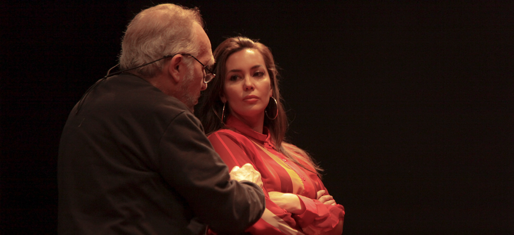

Natalia Gómez Gegualdi

Siempre estuve relacionada con el arte: a los 3 años comencé mi formación en escuela de ballet de danzas clásicas, donde todos los años rendía exámenes internacionales para pasar de nivel. Tuve la suerte de tener una gran maestra como Carla del Piero, y luego seguí formándome fui a la escuela de Rodolfo Olguin y Noemí Cohelo.
En mis años de secundaria en Gallegos pertenecí a un grupo de teatro: actuábamos en obras cada fin de semana en el Teatro Municipal de la ciudad y viajábamos por la provincia para participar de festivales juveniles. Ahí empezó todo.
Me siento afortunada de haber sido alumna y poder aprender de grandes maestros como Augusto Fernandes, Alezzo, ActorStudio, Luis Agustoni, LitoCruz, Ines Estevez, Marcelo Cosentino, entre otros.
En cine con me formé con Emiliano Romero y en comedia musical con Sandy Brandauer.
Participé de varias obras de teatro dentro del circuito under, también durante muchos años hice una obra infantil con la que recorrimos toda la provincia de Buenos Aires, especialmente en los barrios más vulnerables. Hice comerciales, en su mayoría para el exterior, cortomentrajes; y actué en la televisión abierta y el cable.